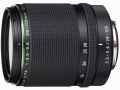
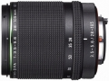
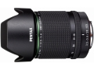
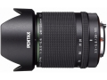

器材库 > 35mm画幅AF变焦镜头 > HD PENTAX-D FA 28-105/3.5-5.6ED DC WR

详细规格
镜头类型
标准变焦镜头
发布日期
2016-02-18
厂家推荐价格
90,000.00 （日元）
焦距
28mm-105mm
最大光圈
f/3.5-5.6
最小光圈
f/22-38
视角（对角）
75°-23.5°
镜头结构
15片/11组
非球面镜片
2片
低/超低色散镜片
超低色散（ED）玻璃镜片及异常低色散玻璃镜片各1片
光圈叶片
9片
最近对焦距离
50cm
最大放大倍率
0.22
驱动马达
DC马达
滤镜口径
62mm
镜头卡口
K/PK/KR
防抖
否
颜色
黑色
尺寸
73.0×86.5mm
重量
440g
附件
镜头盖，镜头袋，遮光罩
备注
防滴结构
骊泉居士2019-01-08 15:484.58 分
操作性 4.50耐用性 5.00性价比 4.50解像力 4.50色彩还原 4.50机械结构 4.50
真大雨2018-02-14 17:084.42 分
操作性 4.50耐用性 4.50性价比 4.50解像力 4.00色彩还原 4.50机械结构 4.50
cero2016-08-22 10:364.58 分
操作性 4.50耐用性 5.00性价比 4.00解像力 5.00色彩还原 4.50机械结构 4.50
产品图 / 样片
HD PENTAX-D FA 28-105/3.5-5.6ED DC WR

HD PENTAX-D FA 28-105/3.5-5.6ED DC WR

HD PENTAX-D FA 28-105/3.5-5.6ED DC WR

HD PENTAX-D FA 28-105/3.5-5.6ED DC WR